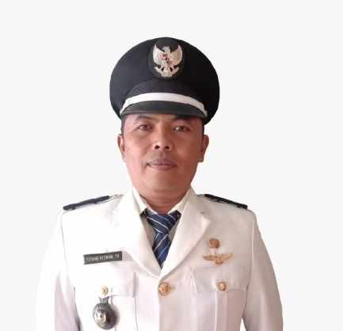
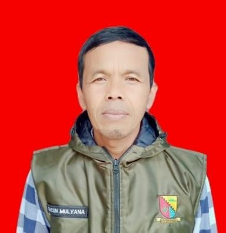
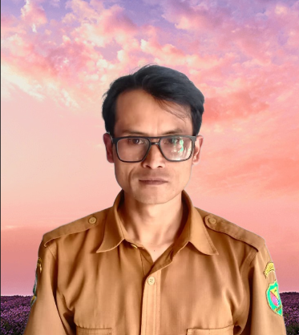

"Membangun Kemandirian Desa Melalui Pemetaan Potensi dan Kelestarian Lingkungan"
Sekilas Desa Cikembang
Dikelilingi barisan perbukitan hijau di dataran tinggi Kecamatan Kertasari, Desa Cikembang menghadirkan harmoni antara kehidupan warga dan alam pegunungan lahan pertanian yang tertata rapi di lereng bukit, udara sejuk, serta tradisi gotong royong yang masih kuat terjaga. Desa ini terbagi menjadi 4 dusun dengan potensi unggulan masing-masing, mulai dari pertanian, peternakan, hingga UMKM. Bersama program KKN Tematik Universitas Muhammadiyah Bandung, Desa Cikembang terus berbenah lewat digitalisasi pelayanan dan pemetaan potensi wilayah, demi kesejahteraan warga sekaligus kelestarian lingkungan hulu Sungai Citarum.
 Dokumentasi: Kantor Desa Cikembang
Dokumentasi: Kantor Desa Cikembang
Visi & Misi
Visi Desa
“Mewujudkan Masyarakat Desa Cikembang Yang Maju,Mandiri,Religius dan Berwawasan Lingkungan”
Misi Desa
- Membangun Tata Kelola Pemerintahan Desa Yang Amanah dalam Melayani Masyarakat
- Memberdayakan dan memajukan Potensi Pemuda,Remaja dan Anak-anak
- Mengelola Potensi SDA dan Lingkungan Gidup
- Memberdayakan dan memajukan Usaha Produktif Masyarakat
- Mendorong Fasilitas Sosial dan Fasilitas Umum untuk Masyarakat.
Aparat Perangkat Desa
Berikut adalah struktur inti organisasi pemerintahan Desa Cikembang yang siap melayani kebutuhan administrasi dan kemajuan seluruh warga:

Tatang Ridwan Turlina
Kepala Desa

Cuncun Mulyana, SE
Sekretaris Desa

Asep Erawan
Bidang Kasi Kesejahteraan